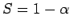
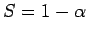
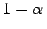

Inhalt Index DeskTop Bronstein

 Wahrscheinlichkeitsrechnung und Mathematische Statistik Theorie der Meßfehler Meßfehler und ihre Verteilung Angabe von Meßergebnissen mit Fehlergrenzen
Wahrscheinlichkeitsrechnung und Mathematische Statistik Theorie der Meßfehler Meßfehler und ihre Verteilung Angabe von Meßergebnissen mit Fehlergrenzen


Die Größe genügt im Falle einer verteilten Grundgesamtheit der t-Verteilung (16.102b) mit dem Freiheitsgrad . Für eine geforderte Irrtumswahrscheinlichkeit  oder statistische Sicherheit  ergeben sich für den unbekannten wahren Wert mit Hilfe der t-Quantile die Vertrauensgrenzen
oder statistische Sicherheit  ergeben sich für den unbekannten wahren Wert mit Hilfe der t-Quantile die Vertrauensgrenzen
Somit liegt der wahre Wert xw mit der statistischen Sicherheit , d.h. mit der Wahrscheinlichkeit , innerhalb dieses Intervalls mit den angegebenen Vertrauensgrenzen.
Meist ist man daran interessiert, den Meßreihenumfang n so gering wie möglich zu halten. Das Vertrauensintervall ist um so enger, je kleiner  gewählt wird und je größer die Anzahl n der Messungen ist. Da mit abnimmt und die Quantile mit f =n-1 abnehmen (bei n von 5 bis 10 ebenfalls mit (s. Tabelle STUDENT-Verteilung)), verringert sich die Breite des Vertrauensintervalls hier mit .
gewählt wird und je größer die Anzahl n der Messungen ist. Da mit abnimmt und die Quantile mit f =n-1 abnehmen (bei n von 5 bis 10 ebenfalls mit (s. Tabelle STUDENT-Verteilung)), verringert sich die Breite des Vertrauensintervalls hier mit .